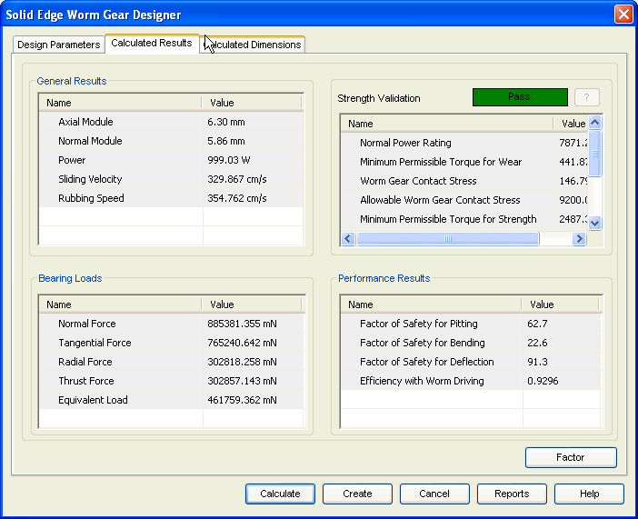

Worm Gear Calculated Results tab
The Calculated Results tab provides the options you use to view results of calculation.

General Results
Displays the input provided for calculation and a few general results for the worm and worm wheel.
Displays the results related to load carrying capacity of the gear.
Strength Validation
Displays the overall performance of the gear in terms of Pass/Fail. You can also review the various allowable and calculated stresses on the gear displayed in this area.
Performance Results
Use the Performance Results area to review the various calculated safety factors.
Note:
Use the ? button to access the Strength Validation Failure window which displays the design failure reasons in case strength validation fails.
How do I
Worm Gear tutorialLearn more
Worm Gear moduleUsing the Worm Gear module
Worm Gear Design Parameters tab
Worm Gear Calculated Dimensions tab
Worm Gear Material Selection
How to (Worm Gears)
Frequently asked questions (Worm Gears)
Standards used for Worm Gear calculations